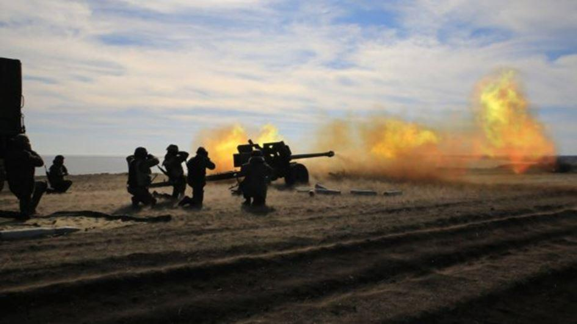
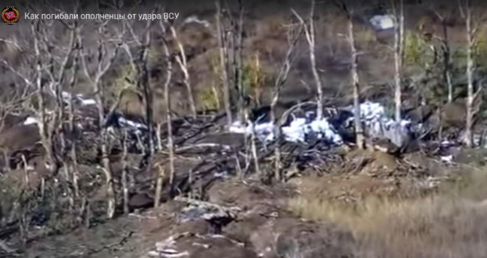
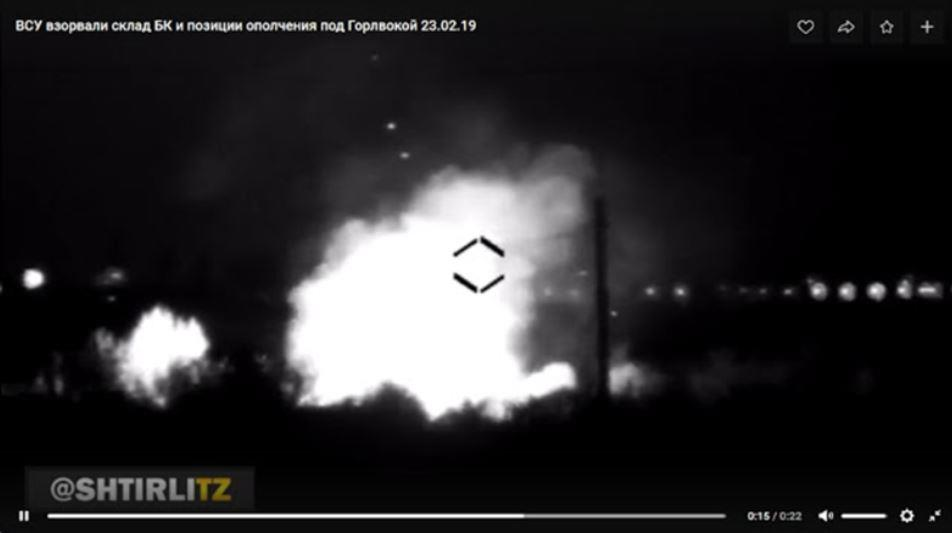

Ce mois de février aura été l'un des plus sanglants du Donbass depuis la signature des accords de Minsk, il y a 4 ans. Dès le début de ce deuxième mois de 2019 et quelques jours après le retour du régiment ultra nationaliste « Azov », les pertes des défenseurs du Donbass ont connu une augmentation dramatique, et qui devait se poursuivre dans les semaines qui ont suivi.
Principalement ce sont des bombardements ukrainiens qui sont à l'origine de l'hécatombe de février, dont il faut leur reconnaitre une surprenante précision et qui me fait penser à l'arrivée sur le front de nouveaux matériels de pointage (voire de mortiers), de nouvelles techniques de correction de tir (depuis des drones d'observation) auxquels il faut rajouter aussi les conséquences de l'expérience du front et de la formation dispensée par les instructeurs étasuniens et canadiens.
C'est principalement le front Sud de la République Populaire de Donetsk (front entre Mariupol et Novoazovsk) qui a été le plus meurtrier avec par exemple le bombardement de Leninskoe1 du 7 février, où 4 miliciens ont été tués, celui de Sahanka2 du 9 février, 4 autres tués, puis celui du 22 février, 3 autres tués, etc...
Le voile des propagandistes que je peux comprendre, mais sans l'approuver, ne peut plus désormais cacher les pertes subies surtout depuis que les ukrainiens systématisent la publication des vidéos aériennes de leurs tirs, prises depuis leurs drones d'observation.

Résultat du bombardement ukrainien du 22 février 2019 (on peut observer ici les impacts ukrainiens et même des corps de miliciens qui n'ont pu être relevés immédiatement du fait des tirs persistants)
Sur d'autres secteurs de la République Populaire de Donetsk, des pertes importantes ont été enregistrées du côté républicain, comme par exemple sur le front de Donetsk ou celui de Gorlovka. À cette liste macabre il faut rajouter également les 2 civils tués3 sur le front le 23 février à Elenovka.
Les premiers résultats connus rapportés par les proches des tués, militaires et familles, font état de plus de trente « 200 » (tués) sans compter les dizaines de blessés. Même le célèbre officier-écrivain Zakhar Prilepine4, a dénoncé sur son réseau social Facebook5, le 22 février, les pertes très importantes subies par les milices au cours de derniers jours, particulièrement dans le bataillon dont il fut le commandant en second ces 3 dernières années.
« Dans notre unité du Donbass, en raison des combats et bombardements constants, nous subissons de grandes pertes. Dieu sait que j'ai toujours essayé de ne pas jouer sur la corde de la pitié et que je n'ai jamais signalé nos pertes.
Mais... ce qui se passe aujourd'hui est un cauchemar !
Quatre morts il y a une semaine et demie. Quatre morts au combat ce matin. Et il y a des blessés. L'intensité des tirs et le nombre de pertes qui ont frappé mes frères d'armes sur le secteur marque ce mois-ci comme l'un des plus difficiles de cette guerre depuis quatre ans »
Sur les réseaux sociaux militaires des unités et des miliciens, la consternation et parfois même la colère sont également visibles, ainsi par exemple ce message du milicien « Vympel » sur le réseau russe V Kontakte, ce 23 février 2019 :
« Dans la RPD, sont tués chaque jour entre 1 et 4 miliciens. Au moins 7 personnes sont décédées au cours des trois derniers jours. Comment sont les choses dans la LC (République de Lugansk), je ne sais pas, mais je pense que c'est à peu près la même chose. Ce n'est plus le débit lent de "Minsk" avec la capture de la zone grise et un ou deux soldats morts par semaine. C'est une vraie extermination. Si l'offensive ne commence pas et que l'APU n'est pas vaincu, il ne restera plus rien de la milice. A ce rythme-là cela représente une perte de 1500 combattants au moins en une année. C’est triste que les combattants ne meurent pas pour la victoire, mais pour la masturbation à Minsk, des oligarques, bureaucrates et politiciens des deux côtés. »
Bombardements ukrainiens sur des positions républicaines

Un autre exemple d'attaque meurtrière ukrainienne (et violation des accords de Minsk) : Ce 23 février en soirée les forces ukrainiennes détruisent un dépôt de munitions républicain près de Gorlovka, tuant 3 miliciens
Le contexte électoral ukrainien (scrutin présidentiel le 31 mars prochain) doit jouer beaucoup dans se regain d'activité ukrainienne sur le front du Donbass autant qu'expliquer peut-être l'absence de réaction de l'artillerie républicaine qui auparavant se permettait des tirs de contre-batteries ponctuels contre les postions ukrainiennes responsables des bombardements.
D'un côté, le candidat à sa propre succession Porochenko, est loin d'être le challenger de cette course présidentielle et doit être tenté de vouloir créditer des victoires militaires contre « l'agresseur russe » pour redorer sa popularité et revenir en pole position.
De l'autre côté, les Républiques du Donbass refusent de rentrer dans une escalade qui alimenterait cette stratégie politicienne de Kiev, et préfèrent faire le gros dos en attendant le nouveau jeu diplomatique (ou militaire) qui apparaîtra à coup sûr au lendemain des élections.
Mais parfois.... « trop c'est trop ! »
Ainsi, le 25 février 2019, devant la poursuite des violations meurtrières quotidiennes des accords de Minsk, le Commandement militaire de la République Populaire de Donetsk a décidé d'autoriser des tirs de contre batteries sur des positions d'artillerie ukrainiennes à l'origine des bombardements. Selon les premières estimations, plusieurs pièces d'artillerie ont été détruites ainsi que 6 soldats tués et 8 autres blessés parmi les forces ukrainiennes. Il s'agit ici d'une riposte mesurée et ponctuelle ciblant dans un esprit de « légitime défense » les unités ennemies ayant ouvert le feu en premier.
Autrement, les miliciens républicains défendant la ligne de front paient le prix fort dans ce jeu de dupes joué entre Moscou, via Donetsk et Washington, via Kiev. Une situation entre enjeux politiques et menaces militaires qui, si elle peut être comprise par la conscience du soldat n'est en revanche jamais acceptée par son cœur, même si son devoir, son honneur et le souvenir des disparus le maintiennent à son poste !
Malgré des lots quotidiens de sang et de larmes, la milice garde le front et le moral hauts et forts, espérant même qu'à défaut de paix réelle une contre-offensive soit enfin décidée pour « bouter les ukrainiens » loin des villes du Donbass qu'ils occupent ou bombardent.
Mais il nous faut encore « prendre notre mal en patience » même quand la patience fait mal
Voici quelques-uns des héros (plus de 30) tombés ce mois-ci pour la Liberté du Donbass mais également sacrifiés sur le vil échiquier des intérêts des uns et des calculs des autres. Et dans le silence des propagandes tentant de cacher leurs morts j'entends comme un écho cette phrase du chanteur breton « Glenmor » (Milig ar Skanv) :
« Ceci est l'immonde chose du soldat :
guerroyer pour les grands d'Église et les princes d'en-bas »
Paix à leurs âmes et que leurs sacrifices gardent éternellement vive la flamme de la révolution dans les cœurs luttant pour la liberté des peuples qui un jour triomphera de la haine et de la cupidité.
Partager cette page